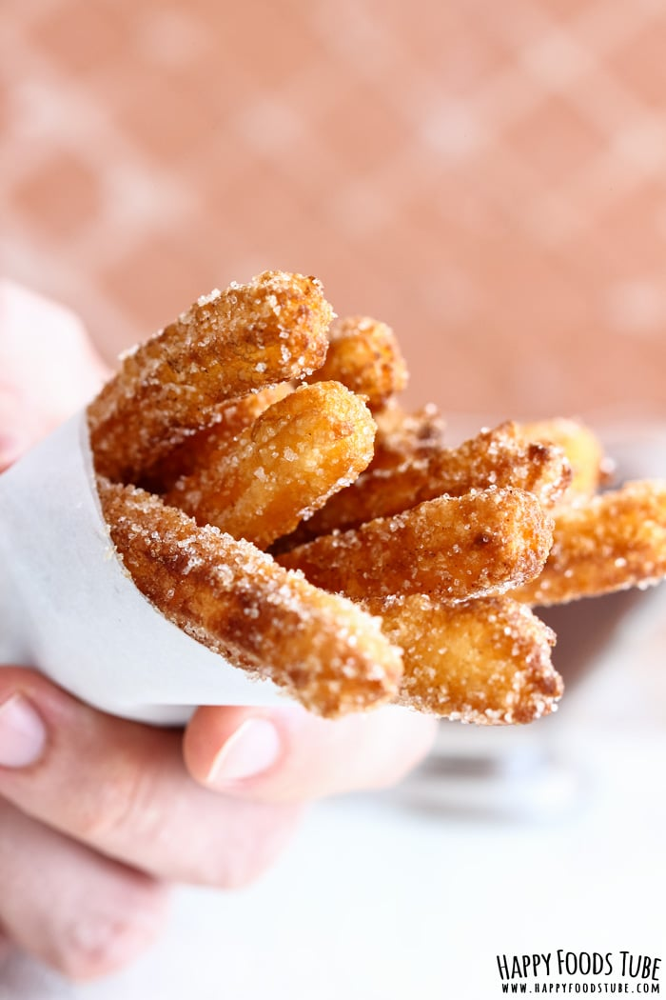

Churros

Description
Have you ever tasted authentic Spanish churros? If not, put them on your bucket list or make these homemade churros to satisfy your sweet tooth cravings right away!
Ingredients
- ⅔ cup all-purpose flour (110 grams)
- ¼ stick unsalted butter (28 grams)
- 1 cup water (250 ml)
- salt , a pinch
- 2 teaspoons sugar
- 1 egg
- 2oil , for frying
Steps
- Place water, butter, sugar & a pinch of salt into a medium-size saucepan. Bring to the boil.
- Add the flour and mix vigorously until well blended (the dough will come together in a minute or two).
- Remove from the stove and let it cool a bit. Once it is not too hot, add the egg and work the egg into the dough. Try to do it as fast as possible. In the beginning, it might look like the churro dough doesn’t wanna bind but take your time it will.
-
Pour the oil into a large frying pan and heat it up.
-
Fill a piping bag fitted with a star piping tip with half of the dough (it is easier to handle).
-
Check if the oil is ready for frying by dropping a tiny piece of the dough in. Once the dough turns nice brown, you are ready to pipe the churros in.
-
Pipe the dough directly into the hot oil (choose any length you like) and cut with a fork (I found a fork the best tool for this). Do not pipe too many churros in as they need space for frying. It will take only about 2 minutes for them to get nice golden color and that is a sign they are ready. They should get the color gradually. If you see they are not getting dark evenly, reduce the temperature.
-
Take them out and place them on a paper kitchen towel to get rid of the excess oil.
-
When they are still warm, roll each of them in sugar mixed with ground cinnamon.
-
Serve warm with thick hot chocolate or chocolate pudding.